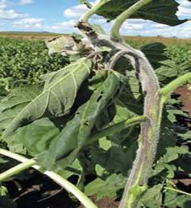

| Home |
| SUNFLOWER |
MAJOR DISEASES |
| 1. Root rot or charcoal rot |
| 2. Leaf blight |
| 3. Rust |
| 4. Head rot |
| 5. Powdery mildew |
| 6. Basal rot |
| 7. Necrosis |
| Questions |
| Download Notes |
SUNFLOWER :: MAJOR DISEASE :: NECROSIS
Necrosis -Tobacco streak virus (TSV)
Symptoms
Characterised by the sudden necrosis of part of lamina followed by twisting of leaves and systemic mosaic. Necrosis of lamina of the lamina, petiole, stem floral calyx and corolla.
-
Advanced symptoms lead to plant death. Black streak on stemNecrosis of stems and petioles, terminal growthcurls down and plants often lodge
Pathogen
Caused by Tobacco streak virus an Ilarvirus 25-28 nm, tripartite genome encapzidated separately
Disease cycle
Virus spreads through transmission by thrips Frankliniella schultzii. Weed hosts serve as natural virus reservoirs. Long and continuous dry spell increases the disease incidence
Management
- Removal of weed hosts
- Management of veetor population
- Changing planting dates